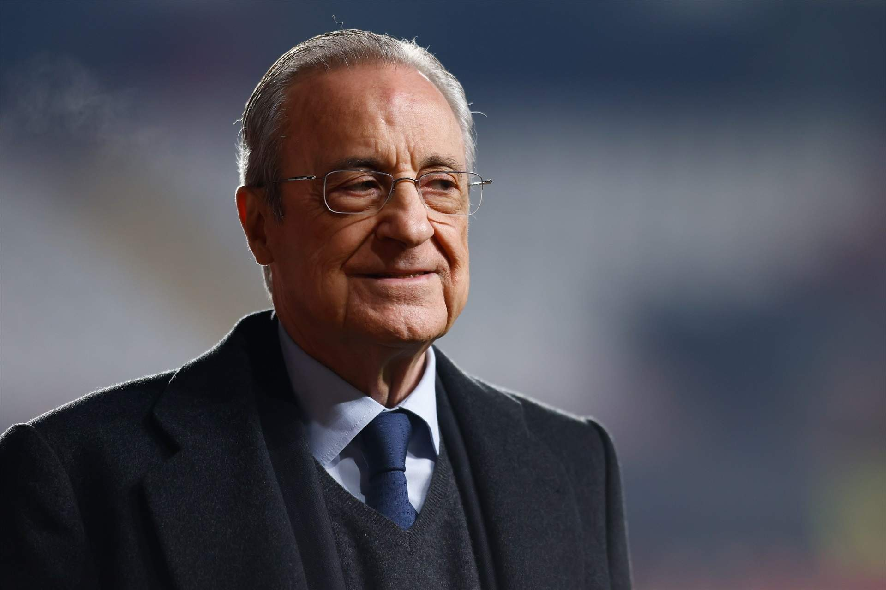
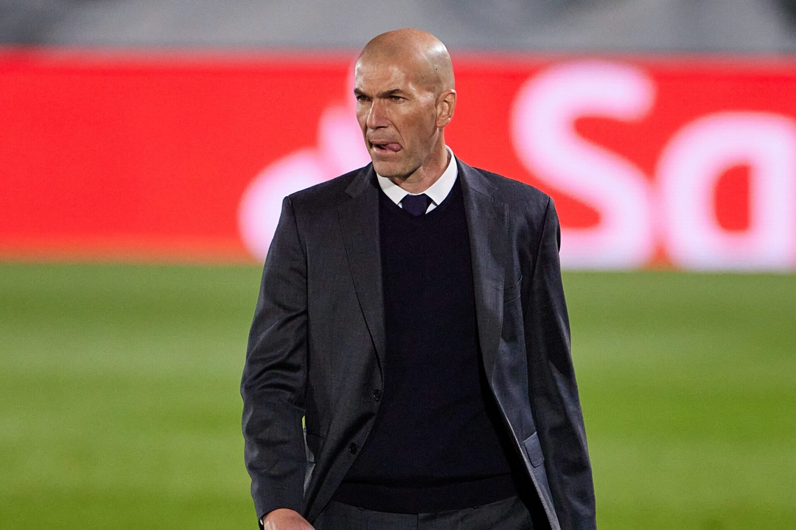
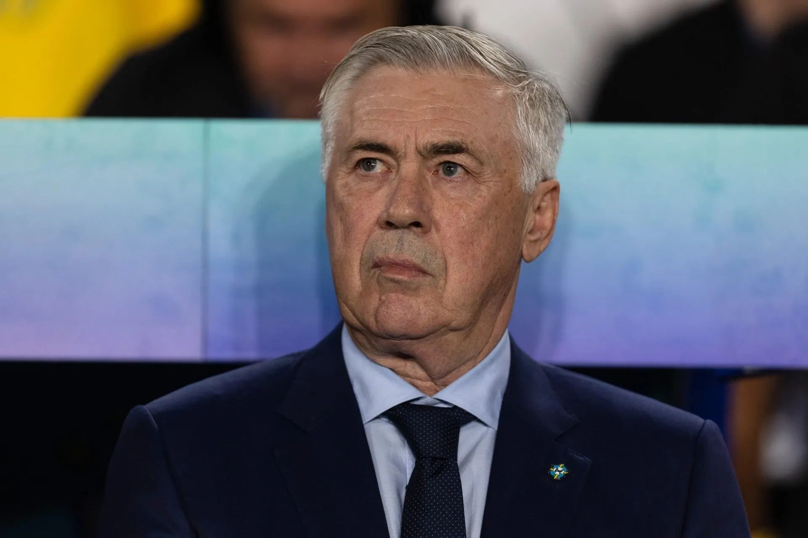
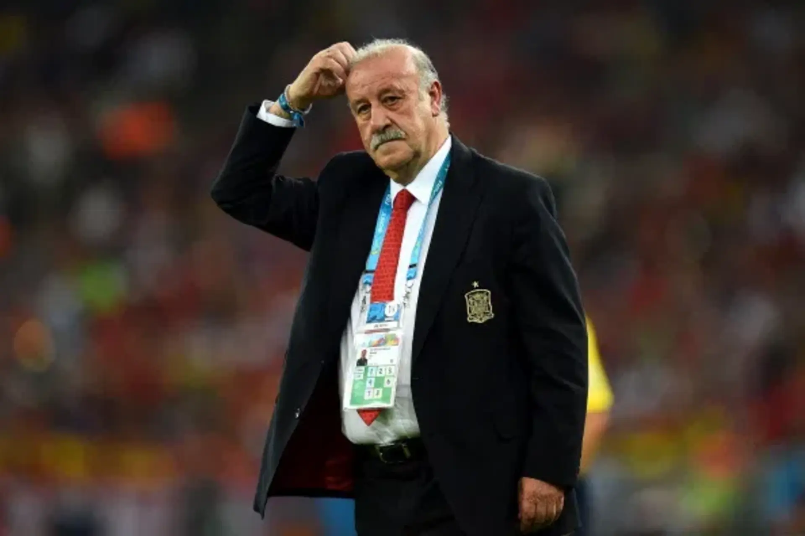
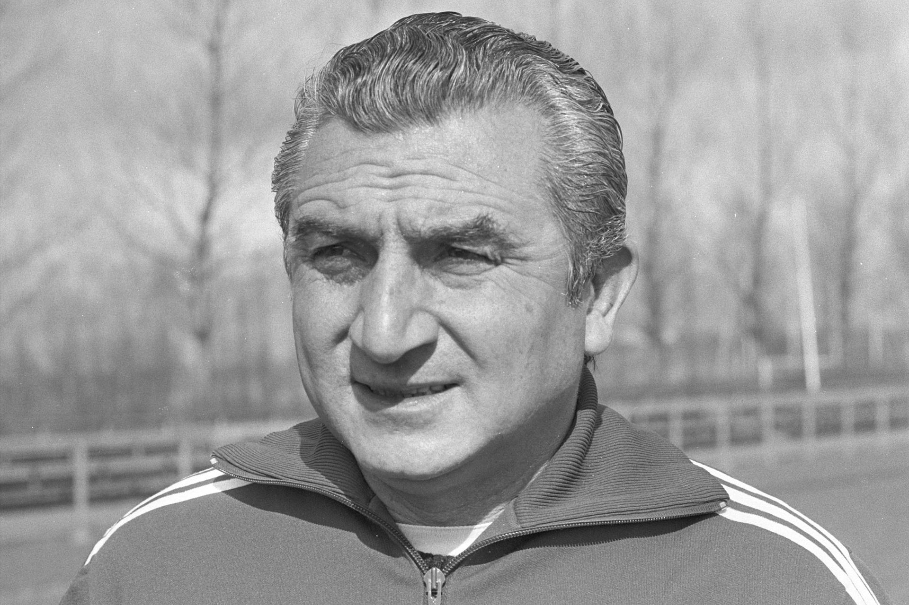
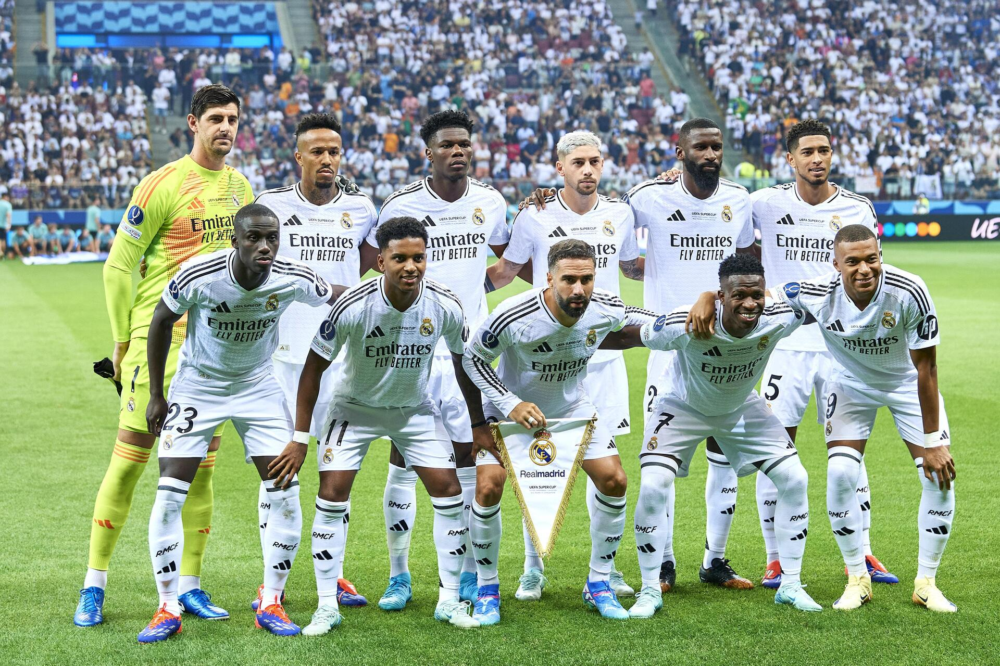
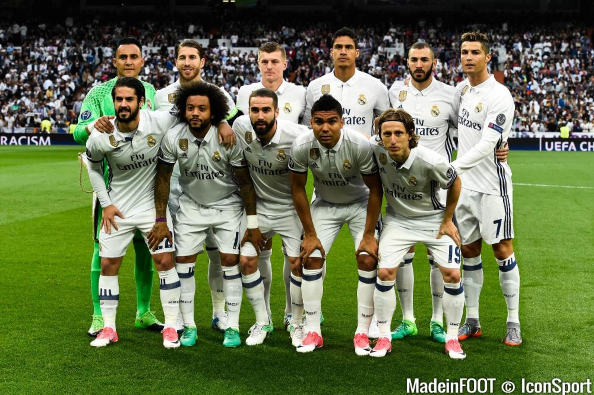

Florentino Pérez

Florentino Pérez est l’une des figures les plus influentes de l’histoire récente du Real Madrid...
Le Real Madrid Club de Fútbol est l’un des clubs les plus emblématiques de l’histoire du football. Fondé en 1902 à Madrid, le club s’est rapidement imposé comme une référence en Espagne puis dans toute l’Europe. Grâce à une culture de la victoire et à une capacité constante à attirer les meilleurs joueurs du monde, le Real Madrid est devenu un symbole d’excellence sportive.
Le club connaît une ascension spectaculaire dans les années 1950 avec l’arrivée de joueurs légendaires comme Alfredo Di Stéfano. Durant cette période, le Real Madrid domine le football européen en remportant les cinq premières éditions de la Coupe d’Europe des clubs champions, ce qui marque profondément l’histoire du football.
Le club connaît une ascension spectaculaire dans les années 1950 avec l’arrivée de joueurs légendaires comme Alfredo Di Stéfano. Durant cette période, le Real Madrid domine le football européen en remportant les cinq premières éditions de la Coupe d’Europe des clubs champions, ce qui marque profondément l’histoire du football.

Florentino Pérez est l’une des figures les plus influentes de l’histoire récente du Real Madrid...
Álvaro Arbeloa est aujourd’hui l’entraîneur de l’équipe première du Real Madrid...





L’équipe actuelle du Real Madrid mêle jeunesse, intensité et créativité...

Le Real Madrid a connu plusieurs générations légendaires...